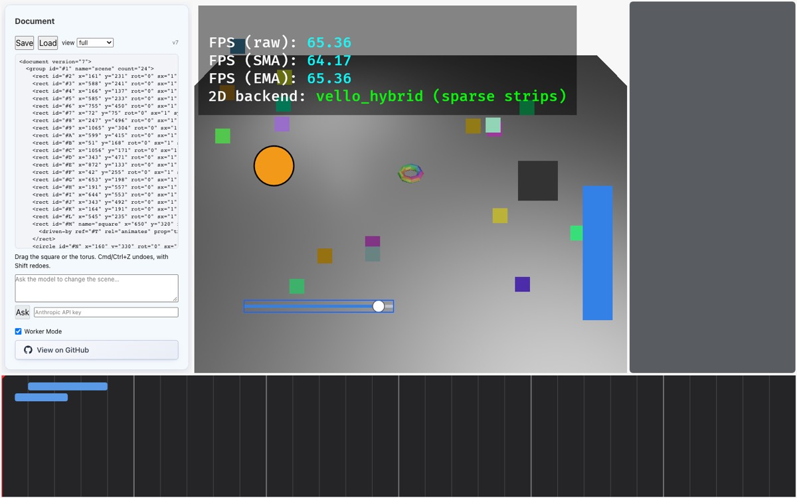

Part 5 of 7 · Reactive graph
Bindings and the reactive graph
The goal for step 5, from the plan's exit criteria: moving the slider changes the bar's height in the same frame, with no process boundary crossed. That needs a language for “this value is computed from that one”, a way to decide what to recompute and in what order, and a way to preview a value while dragging without writing a transaction every frame.
Slot::Bound, Leaf), Part 3 (transactions, after_transaction) and Part 4 (the reconciler reads resolved values; the sync drains “changes”).expr.rs, graph.rs, the gesture half of lib.rs, the slider parts of interaction.rs, render.rs and demo.rs, and tests/reactive.rs.5.1Two simple versions
A Bevy system per relationship. fn bar_follows_slider(…) { bar.h = slider.value * 300 }. It works for the demo. But the relationship lives in Rust code, not in the document, so it isn't saved, the model can't see or edit it, undo can't touch it, and every new relationship means a new system. Vision doc 02's invariant 10 (“no systems are authored”) rules this out.
Formula strings, re-evaluated each frame. Store "slider.value * 300" in the document and evaluate every formula every frame. That fixes saving and visibility, but you re-parse text constantly, recompute formulas whose inputs didn't change, and if formula C reads formula B, C may run before B and briefly show a wrong value (a “glitch”).
- An expression language (
expr.rs). Formulas are stored as a parsed tree, saved and shown as text, and read their inputs through one resolver function. - A reactive graph (
graph.rs). Each binding knows exactly which leaves it reads. When a leaf changes, only what depends on it is re-evaluated, in dependency order, and propagation stops early when a result didn't change. - A gesture overlay, inside the graph. While you scrub, the previewed value sits on top of the document and every dependent follows. Release turns the preview into one
Settransaction.
5.2Expressions: a tree, not a string
The demo bar's two bindings, from demo.rs:125–128, are 640 - #O.slider.value * 300 for its top edge and #O.slider.value * 300 for its height. As a bar grows it has to move up, since y points down. Parsed, the first becomes this tree:
Ref is the only input. Finding it takes a walk over the tree, with no evaluation, which is what “static dependencies” means./// A leaf address: the unit of dependency.
#[derive(Clone, Copy, PartialEq, Eq, Hash, PartialOrd, Ord, Debug)]
pub struct Leaf {
pub node: NodeId,
pub path: LeafPath,
}
impl fmt::Display for Leaf {
fn fmt(&self, f: &mut fmt::Formatter<'_>) -> fmt::Result {
write!(f, "{}.{}", self.node, self.path)
}
}
#[derive(Clone, Debug, PartialEq)]
pub enum Expr {
Lit(Value),
Ref(Leaf),
Neg(Box<Expr>),
Not(Box<Expr>),
Bin(BinOp, Box<Expr>, Box<Expr>),
If(Box<Expr>, Box<Expr>, Box<Expr>),
Call(String, Vec<Expr>),
}Seven node kinds: a literal value, a reference to a leaf, negation, logical not, a binary operator, cond ? a : b, and a function call. Box<Expr> is how a tree node holds child trees (phrasebook, Part 1).
Dependencies are read off the tree
impl Expr {
/// Every leaf this expression reads. Static: no evaluation needed.
pub fn deps(&self) -> BTreeSet<Leaf> {
let mut out = BTreeSet::new();
self.collect_deps(&mut out);
out
}
fn collect_deps(&self, out: &mut BTreeSet<Leaf>) {
match self {
Expr::Lit(_) => {}
Expr::Ref(l) => {
out.insert(*l);
}
Expr::Neg(e) | Expr::Not(e) => e.collect_deps(out),
Expr::Bin(_, a, b) => {
a.collect_deps(out);
b.collect_deps(out);
}
Expr::If(c, a, b) => {
c.collect_deps(out);
a.collect_deps(out);
b.collect_deps(out);
}
Expr::Call(_, args) => {
for a in args {
a.collect_deps(out);
}
}
}
}deps() walks the tree and collects every Ref. This works because the language has no way to compute which leaf to read at runtime: every reference is written literally. That restriction is deliberate (it's why there is no Get yet), because it lets the graph be built without evaluating anything.
Evaluation goes through one resolver
/// Evaluate against a resolver for leaf values. Reads go through the
/// resolver and nowhere else, which is the hook a tracking evaluator
/// would use later.
pub fn eval(&self, read: &dyn Fn(Leaf) -> Option<Value>) -> Result<Value, EvalError> {
match self {
Expr::Lit(v) => Ok(v.clone()),
Expr::Ref(l) => read(*l).ok_or(EvalError::Unresolved(*l)),
Expr::Neg(e) => match e.eval(read)? {
Value::Number(n) => Ok(Value::Number(-n)),
v => Err(EvalError::Type(format!("cannot negate {}", v.kind().name()))),
},
Expr::Not(e) => match e.eval(read)? {
Value::Bool(b) => Ok(Value::Bool(!b)),
v => Err(EvalError::Type(format!("cannot negate {}", v.kind().name()))),
},
Expr::Bin(op, a, b) => {
let a = a.eval(read)?;
let b = b.eval(read)?;
binary(*op, a, b)
}
Expr::If(c, a, b) => match c.eval(read)? {
Value::Bool(true) => a.eval(read),
Value::Bool(false) => b.eval(read),
v => Err(EvalError::Type(format!("condition is {}, not bool", v.kind().name()))),
},
Expr::Call(name, args) => {
let vals: Result<Vec<Value>, EvalError> = args.iter().map(|a| a.eval(read)).collect();
floor::call(name, &vals?)
}
}
}read: &dyn Fn(Leaf) -> Option<Value> means “a reference to any function that takes a Leaf and maybe returns a Value”. dyn means the exact function type is decided at runtime. So eval doesn't know where values come from; the caller passes in a lookup. The graph passes a lookup that checks the gesture overlay, resolved bindings, clip samples and constants, in that order (5.5). The tests pass a closure that returns canned values. The comment on line 134 notes that if dependencies ever become dynamic, this resolver is the single place to start recording reads.
binary() (expr.rs:288) defines what operators mean: arithmetic on numbers, +/- on vectors, vector × number, string concatenation, comparisons, &&/|| on booleans. Anything else is a type error, never a silent coercion. The functions available to Call are the floor: a fixed list of pure, cheap functions, where adding one means adding one match arm:
pub fn call(func: &str, args: &[Value]) -> Result<Value, EvalError> {
let n = |k| nums(func, args, k);
Ok(Value::Number(match func {
"abs" => n(1)?[0].abs(),
"floor" => n(1)?[0].floor(),
"ceil" => n(1)?[0].ceil(),
"round" => n(1)?[0].round(),
"min" => {
let a = n(2)?;
a[0].min(a[1])
}
"max" => {
let a = n(2)?;
a[0].max(a[1])
}
"clamp" => {
let a = n(3)?;
a[0].clamp(a[1].min(a[2]), a[2].max(a[1]))
}
"lerp" => {
let a = n(3)?;
a[0] + (a[1] - a[0]) * a[2]
}
// scale(x, d0, d1, r0, r1): linear map of x from [d0, d1] to [r0, r1].
"scale" => {
let a = n(5)?;
let t = if a[2] == a[1] { 0.0 } else { (a[0] - a[1]) / (a[2] - a[1]) };
a[3] + (a[4] - a[3]) * t
}
_ => return Err(EvalError::UnknownFunction(func.to_owned())),
}))
}Text in, text out: parser and printer
Files and views show a binding as text ({"bind": "640 - #O.slider.value * 300"}), so the tree must be parsable from text and printable back to exactly the same text. lex splits text into tokens: numbers, strings, 'enum' literals, #id.component.field references, identifiers, operators. Parser::expr then builds the tree using precedence climbing:
fn expr(&mut self, min_prec: u8) -> Result<Expr, ParseError> {
let mut lhs = self.unary()?;
loop {
let Some(tok) = self.peek() else { break };
let op = match tok {
Tok::Op(s) => match *s {
"+" => BinOp::Add,
"-" => BinOp::Sub,
"*" => BinOp::Mul,
"/" => BinOp::Div,
"%" => BinOp::Mod,
"<" => BinOp::Lt,
"<=" => BinOp::Le,
">" => BinOp::Gt,
">=" => BinOp::Ge,
"==" => BinOp::Eq,
"!=" => BinOp::Ne,
"&&" => BinOp::And,
"||" => BinOp::Or,
_ => break,
},
Tok::Question if min_prec == PREC_TERNARY => {
self.next();
let a = self.expr(PREC_TERNARY)?;
self.expect(Tok::Colon)?;
let b = self.expr(PREC_TERNARY)?;
lhs = Expr::If(Box::new(lhs), Box::new(a), Box::new(b));
continue;
}
_ => break,
};
let prec = op.precedence();
if prec < min_prec.max(1) {
break;
}
self.next();
let rhs = self.expr(prec + 1)?;
lhs = Expr::Bin(op, Box::new(lhs), Box::new(rhs));
}
Ok(lhs)
}How to read it, using 1 + 2 * 3. expr(0) reads 1 as the left side, then sees + (precedence 5). It consumes it and calls expr(6) for the right side. That inner call reads 2, sees * (precedence 6, not below its minimum of 6), consumes it, reads 3, and returns 2 * 3. The outer call builds 1 + (2 * 3). The prec + 1 on line 610 also makes operators of equal precedence group to the left, so 1 - 2 - 3 means (1 - 2) - 3. The printer (expr.rs:175) mirrors this: it adds parentheses only where precedence requires them. The test parse_print_roundtrip checks that parsing then printing gives back the original text for fourteen cases.
5.3Validation: no dangling reads, no cycles
A binding is checked when a transaction applies, whether it arrives through Set, Create or AddComp (Part 3's set step 2):
/// A binding may only read leaves that exist, and may not reach itself.
fn check_binding(
doc: &Document,
cx: &Ctx,
target: crate::expr::Leaf,
expr: &crate::expr::Expr,
) -> Result<(), ApplyError> {
for dep in expr.deps() {
live(doc, cx, dep.node).map_err(|e| cx.err(e.kind, format!("binding reads {dep}: {}", e.message)))?;
if doc.component(dep.node, dep.path.component).is_none() {
return Err(cx.err(
ErrorKind::UnknownPath,
format!(
"binding reads {dep}, but {} has no {} component",
dep.node,
dep.path.component.name()
),
));
}
}
if doc.binding_cycles(target, expr) {
return Err(cx.err(ErrorKind::Cycle, format!("binding {target} would depend on itself")));
}
Ok(())
}Every leaf it reads must be on a live node that has that component. And it must not reach itself, which binding_cycles checks by following bindings outward from the new expression:
/// Whether binding `target` to `expr` would let a value depend on itself,
/// following existing bindings. Checked at apply time so the graph is
/// always a DAG.
pub fn binding_cycles(&self, target: Leaf, expr: &Expr) -> bool {
let mut stack: Vec<Leaf> = expr.deps().into_iter().collect();
let mut seen = BTreeSet::new();
while let Some(l) = stack.pop() {
if l == target {
return true;
}
if !seen.insert(l) {
continue;
}
if let Some(e) = self.leaf(l.node, l.path).and_then(|s| s.expr()) {
stack.extend(e.deps());
}
}
false
}This is a depth-first search. Start from the new expression's dependencies. For each one that is itself bound, add its dependencies. If the search ever reaches the leaf being bound, it's a cycle. Because every binding is checked this way when it's added, the graph is always acyclic, and the evaluator can rely on that. (The cycle message you saw in Part 3 comes from here.)
5.4The reactive graph
Reactive lives inside the Store and holds everything derived from bindings:
#[derive(Clone, Debug)]
struct BoundNode {
expr: Expr,
deps: BTreeSet<Leaf>,
height: u32,
}
#[derive(Clone, Debug, Default)]
pub struct Reactive {
nodes: BTreeMap<Leaf, BoundNode>,
/// Any leaf -> the bound leaves that read it.
dependents: BTreeMap<Leaf, BTreeSet<Leaf>>,
resolved: BTreeMap<Leaf, Value>,
overlay: BTreeMap<Leaf, Value>,
/// Clip-sampled values at the current time (`time.rs`). Read beneath the
/// gesture overlay and above the authored constant.
animated: BTreeMap<Leaf, Value>,
changes: BTreeMap<Leaf, Value>,
/// Errors from the last evaluation pass, by leaf. A leaf in error keeps
/// its previous resolved value.
pub errors: BTreeMap<Leaf, String>,
/// Expressions evaluated since construction. Tests use it to check that
/// the schedule is glitch-free and the cutoff works.
pub evaluations: u64,
}| Field | Holds |
|---|---|
nodes | One entry per bound leaf: its expression, its dependency set and its height. |
dependents | The reverse edges: for any leaf, which bound leaves read it. This is how a change finds what to recompute. |
resolved | The current computed value of every bound leaf. |
overlay | Gesture previews (5.6). |
animated | Clip samples at the current time (Part 6). |
changes | Leaves whose visible value moved since the sync last asked. drain_changes() empties it, and the sync turns it into “affected nodes” (Part 4, 4.4). |
errors | Evaluation errors by leaf. A leaf in error keeps its previous value, and the sync logs a warning. |
Height: the order that avoids glitches
A bound leaf's height is 1 + the largest height among the bound leaves it reads. A leaf that isn't bound counts as 0. The test scene has a diamond: b = a * 2 and c = a + b.
dependents map. Evaluating in height order runs every binding after everything it reads.If a changes and you evaluate “whatever depends on a” in arbitrary order, c might run first: it would compute anew + bold, show that wrong value, then run again after b. Sorting by height guarantees b runs before c, and each runs once. The test diamond_is_glitch_free_and_cutoff_stops_propagation checks exactly this by counting evaluations: setting a runs two expressions, not three or four.
fn compute_heights(&mut self) {
// Relaxation to a fixpoint. The applier keeps the graph acyclic, so
// this converges within `nodes.len()` rounds; the bound is a guard.
for _ in 0..=self.nodes.len() {
let mut changed = false;
let keys: Vec<Leaf> = self.nodes.keys().copied().collect();
for k in keys {
let h = 1 + self.nodes[&k]
.deps
.iter()
.filter_map(|d| self.nodes.get(d).map(|n| n.height))
.max()
.unwrap_or(0);
let node = self.nodes.get_mut(&k).expect("key");
if node.height != h {
node.height = h;
changed = true;
}
}
if !changed {
break;
}
}
}Heights are computed by repeatedly raising each node's height until nothing changes. Since the graph has no cycles, this finishes within node count rounds; the loop bound is a safety guard.
Rebuild vs. invalidate
There are two ways the graph updates, and Store::after_transaction picks between them:
/// Keep the graph in step with a transaction that just applied.
fn after_transaction(&mut self, tx: &Transaction) {
let structural = tx.ops.iter().chain(tx.inverse.iter()).any(|op| match op {
Op::Create { .. } | Op::Delete { .. } | Op::AddComp { .. } | Op::RemoveComp { .. } => true,
Op::Set { slot, .. } => slot.expr().is_some(),
_ => false,
});
if structural {
self.reactive.rebuild(&self.doc);
self.resample();
} else {
let changed: Vec<Leaf> = tx
.ops
.iter()
.filter_map(|op| match op {
Op::Set { id, path, .. } => Some(Leaf {
node: *id,
path: *path,
}),
_ => None,
})
.collect();
self.reactive.invalidate(&self.doc, changed);
// A set on a clip's timing, or a link, changes the sample too.
// Cheap enough to do unconditionally: clips are few.
self.resample();
}
}- Structural transactions create or delete nodes, add or remove components, or change a binding. They call
rebuild, which re-reads every bound slot from the document (Document::bound_slots), rebuilds edges and heights, and re-evaluates everything. It checks both the ops and the inverse, because undoing a binding is also structural. - Plain value changes (a
Setof a constant, which is by far the most common, such as a drag) callinvalidatewith just the leaves that were set.
/// The values of `changed` leaves moved (a constant was set, or the
/// overlay changed). Re-evaluate what depends on them, in height order.
pub fn invalidate(&mut self, doc: &Document, changed: impl IntoIterator<Item = Leaf>) {
let mut primed = BTreeSet::new();
let mut dirty = BTreeSet::new();
let mut stack: Vec<Leaf> = changed.into_iter().collect();
for l in &stack {
if let Some(ds) = self.dependents.get(l) {
primed.extend(ds.iter().copied());
}
}
while let Some(l) = stack.pop() {
if let Some(ds) = self.dependents.get(&l) {
for d in ds {
if dirty.insert(*d) {
stack.push(*d);
}
}
}
}
self.evaluate(doc, &dirty, &primed);
}invalidate follows dependents outward from the changed leaves to find everything that might need recomputing (dirty), and marks only the direct readers of the changed leaves as definitely needing it (primed). Then it evaluates:
/// Evaluate `dirty` in height order. A node runs only if it is primed:
/// a leaf it reads changed since the last pass. Primed-ness spreads from
/// a node to its dependents only when its own value actually changed,
/// which is the equality cutoff.
fn evaluate(&mut self, doc: &Document, dirty: &BTreeSet<Leaf>, primed: &BTreeSet<Leaf>) {
let mut primed = primed.clone();
let mut order: Vec<(u32, Leaf)> = dirty.iter().map(|l| (self.nodes[l].height, *l)).collect();
order.sort();
for (_, leaf) in order {
if !primed.contains(&leaf) {
continue;
}
self.evaluations += 1;
let expr = self.nodes[&leaf].expr.clone();
let result = {
let overlay = &self.overlay;
let animated = &self.animated;
let resolved = &self.resolved;
let nodes = &self.nodes;
expr.eval(&|l| read_with(overlay, animated, resolved, nodes, doc, l))
};
match result {
Ok(v) => {
self.errors.remove(&leaf);
if self.resolved.get(&leaf) != Some(&v) {
self.resolved.insert(leaf, v.clone());
self.changes.insert(leaf, v);
if let Some(ds) = self.dependents.get(&leaf) {
primed.extend(ds.iter().copied());
}
}
}
Err(e) => {
self.errors.insert(leaf, e.to_string());
}
}
}
}The dirty set is sorted by height (232–233). A node runs only if it is primed (235–237). When a node's new value differs from its old one (250), its own dependents become primed. When it produced the same value, they don't, and propagation stops there. That is the equality cutoff. In the test, a threshold binding w > 100 ? 1 : 0 re-evaluates when w goes from 150 to 160, still produces 1, and the binding that reads it is never run.
5.5What a reader sees: four layers
This short function answers “what is this leaf's value right now?” for the reconciler, views, drag code and the evaluator itself:
fn read_with(
overlay: &BTreeMap<Leaf, Value>,
animated: &BTreeMap<Leaf, Value>,
resolved: &BTreeMap<Leaf, Value>,
nodes: &BTreeMap<Leaf, BoundNode>,
doc: &Document,
leaf: Leaf,
) -> Option<Value> {
if let Some(v) = overlay.get(&leaf) {
return Some(v.clone());
}
if nodes.contains_key(&leaf) {
return resolved.get(&leaf).cloned();
}
if let Some(v) = animated.get(&leaf) {
return Some(v.clone());
}
doc.leaf(leaf.node, leaf.path)?.constant().cloned()
}Store::resolved(id, path) is this function. The reconciler draws with it, so bindings, previews and clips all reach the screen through the same call.Note the if nodes.contains_key(&leaf) on line 277: a bound leaf returns its resolved value and never falls through to layer 3. That is why Part 6 reports a clip that targets a bound leaf as an error: the clip's value could never show.
5.6Gestures: preview every frame, commit once
Scrubbing the slider submits a Set transaction every frame. The bar follows, but a two-second scrub fills history with 120 “set slider” entries, and undo steps back one frame at a time.
The overlay. Store::preview puts a value on top of the document for one leaf, and the graph re-evaluates dependents immediately. commit_gesture turns every previewed value into one transaction. cancel_gesture drops them. The document isn't written until release.
/// Preview a leaf's value for the duration of a gesture. Bindings that
/// read it re-evaluate now; nothing is written to the document until
/// [`Store::commit_gesture`].
pub fn preview(&mut self, id: NodeId, path: LeafPath, value: Value) {
self.reactive.preview(&self.doc, Leaf { node: id, path }, value);
}
pub fn gesture_in_progress(&self) -> bool {
!self.reactive.overlay().is_empty()
}
/// Turn the previewed values into one transaction. Previews on bound
/// leaves are dropped: a derived value has no handle without a
/// disambiguation policy (doc 02 invariant 2). `None` when nothing was
/// previewed or nothing differs from the document.
pub fn commit_gesture(
&mut self,
label: impl Into<String>,
actor: Actor,
ts: u64,
) -> Option<Result<Applied, Vec<ApplyError>>> {
let mut ops = Vec::new();
for (leaf, value) in self.reactive.overlay() {
let Some(slot) = self.doc.leaf(leaf.node, leaf.path) else {
continue;
};
if slot.expr().is_some() {
continue;
}
if slot.constant() != Some(value) {
ops.push(Op::Set {
id: leaf.node,
path: leaf.path,
slot: Slot::Const(value.clone()),
});
}
}
if ops.is_empty() {
self.cancel_gesture();
return None;
}
let result = self.apply(TransactionInput {
label: label.into(),
actor,
ts,
idempotency_key: None,
ops,
});
self.reactive.clear_overlay(&self.doc);
Some(result)
}
pub fn cancel_gesture(&mut self) {
self.reactive.clear_overlay(&self.doc);
}Commit builds a Set for each previewed leaf that (a) is not bound (lines 203–205: a derived value has no handle, as in Part 4) and (b) actually differs from the document. If nothing qualifies it cancels and returns None, so no empty transaction is recorded. Here is real output from the slider-and-bar scene:
store.preview(#2, slider.value, 0.8) // the pointer is scrubbing the slider
store.drain_changes() →
#2.slider.value = 0.8
#3.transform2d.y = 400 // 640 - 0.8 * 300
#3.size.h = 240 // 0.8 * 300
store.gesture_in_progress() → true // nothing written to the document yet
store.commit_gesture("set slider", Human, …) →
Some(Ok(Applied { version: Version(2), replayed: false })) // ONE transactionThe graph's side is short: preview writes the overlay and invalidates dependents; clear_overlay removes it and reports the values falling back:
/// Preview a value without writing the document.
pub fn preview(&mut self, doc: &Document, leaf: Leaf, value: Value) {
let before = self.read(doc, leaf);
self.overlay.insert(leaf, value.clone());
if before.as_ref() != Some(&value) {
self.changes.insert(leaf, value);
self.invalidate(doc, [leaf]);
}
}
/// Drop every preview; values fall back to the document.
pub fn clear_overlay(&mut self, doc: &Document) {
let leaves: Vec<Leaf> = self.overlay.keys().copied().collect();
self.overlay.clear();
for &l in &leaves {
if let Some(v) = self.read(doc, l) {
self.changes.insert(l, v);
}
}
self.invalidate(doc, leaves);
}The slider node, end to end
The slider is an ordinary node (type slider, components transform2d, size and slider), drawn by the reconciler as a track, a filled part and a knob (render.rs:62–75). Pressing on it starts a SliderValue drag instead of a move (interaction.rs:71–74). While dragging:
Some(crate::DragKind::SliderValue) => {
// Pointer x along the track, in the slider's own space, becomes a
// value previewed through the store; anything bound to it follows
// in the same frame, and nothing is written until release.
let Some(p) = panels.rect(VIEWER_PANEL).and_then(|r| document_from_screen(r, pointer.screen)) else {
return;
};
let Ok((prov, d)) = sliders.get(entity) else { return };
let Shape2d::Slider { w, .. } = d.shape else { return };
let Ok(global) = globals.get(entity) else { return };
let local = global.affine().inverse().transform_point3(p.extend(0.0));
let t = (local.x / w.max(1.0)).clamp(0.0, 1.0) as f64;
let id = prov.0;
let leaf = |s: &str| -> LeafPath { s.parse().expect("declared leaf") };
let num = |s: &str, d: f64| store.0.resolved(id, leaf(s)).and_then(|v| v.as_f64()).unwrap_or(d);
let (min, max, step) = (num("slider.min", 0.0), num("slider.max", 1.0), num("slider.step", 0.0));
let mut value = min + t * (max - min);
if step > 0.0 {
value = min + ((value - min) / step).round() * step;
}
let value = value.clamp(min.min(max), max.max(min));
if num("slider.value", f64::NAN) != value {
store.0.preview(id, leaf("slider.value"), Value::Number(value));
}
}The pointer is mapped into the slider's own space, turned into a fraction t of the track width, mapped to min..max, snapped to step, and previewed. This system runs inside Bevy with direct access to the Store resource, so no message is sent anywhere, which satisfies vision doc 02's invariant 8 (“the inner loop of a continuous manipulation never crosses a process boundary”). The next frame's sync_document sees has_changes(), and the reconciler redraws the knob and the bar together. On release, drag_commit_system pushes GestureRequest::Commit("set slider") (interaction.rs:217–221), and the sync calls commit_gesture.

v7. The whole scrub produced one transaction.5.7What the view shows
Views read through the same four layers, and they add the formula next to the value:
<document version="1">
<group id="#1" count="3">
<slider id="#2" name="level" x="100" y="600" rot="0" sx="1" sy="1" min="0" max="1" step="0.01" value="0.4"/>
<bar id="#3" x="780" y="520" y.bind="640 - #2.slider.value * 300" rot="0" sx="1" sy="1" w="60" h="120" h.bind="#2.slider.value * 300"/>
<rect id="#4" x="500" y="420" rot="0" sx="1" sy="1" w="100" h="100">
<driven-by ref="#6" rel="animates" prop="transform2d.x"/>
</rect>
</group>
<timeline id="#5" count="1">
<clip id="#6" start="0.5" dur="2" easing="linear" prop="transform2d.x" from="500" to="700">
<animates to="#4"/>
</clip>
</timeline>
</document>h="120" h.bind="#2.slider.value * 300" tells a reader what the value is and why. The model reads the same thing, and learns from its manifest (Part 7) that a leaf with .bind is derived and can't be set directly. The <driven-by> on the rect is Part 6.
A binding's value kind isn't checked when it's added (component.rs:239–240), because it isn't known until evaluation. Binding fill.color to a number is accepted by apply. The reconciler's Reader::color then gets a Number, returns None, and the shape draws with no fill. No error appears, because evaluation itself succeeded. Kind errors that happen inside an expression (1 + true) do land in reactive.errors and get logged. A check that the resolved value's kind matches the leaf's declared kind, inside evaluate, would close the gap.
- A binding is an
Exprtree with static dependencies. It's saved and shown as canonical text, and validated at apply time for dangling reads and cycles. - The reactive graph evaluates in height order (no glitches) with an equality cutoff (no wasted work). It rebuilds on structural changes and invalidates on value changes.
- Every read goes through four layers: overlay → binding → clip → constant.
- A slider scrub is a string of previews and one commit. Bound leaves never get a handle.